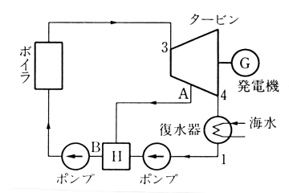
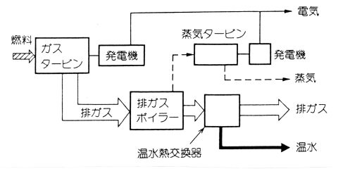
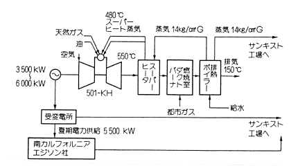
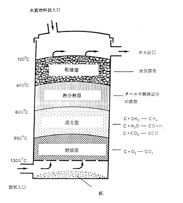

森林バイオマスによってどのようなエネルギー供給が可能で，経済性はどうであるかを以下簡単に述べる．まずプラントにおけるエネルギーの取り出しについて検討し，その中での有効なプラントによる広葉樹を用いたエネルギー供給の経済性を考察する．
原動機単体の特徴を簡単に表1に表した．蒸気タービンとガスタービンについては，発生したエネルギーををより有効に使うために以下の方法がある．
| 蒸気タービン | ガスタービン | ディーゼルエンジン | |
|---|---|---|---|
| 電気(%) | 12 | 22 | 32 |
| 蒸気(%) | (低圧) 68 | 50 | 21 |
| 排熱(%) | 20 | 28 | 20 |
| 温水(%) | − | − | 27 |
| 発電容量(kW) | 1000〜 | 500〜30000 | 40〜3000 |
蒸気タービン…発電効率上昇のため，再熱サイクルと再生サイクルが考えられる．

図1 再生サイクルの構成(斉藤孝基ほか)
ガスタービン…熱電比を小さくするための複合サイクルと熱電比を自由に変更させるためのチェンサイクルが考えられる．

図2 複合サイクル発電プラントの構成(井上宇市ほか)

図3 チェンサイクルの実用例(井上宇市ほか)
以上の方式により蒸気タービンの最大発電効率は40%，ガスタービンは45%まで可能となる．しかし，蒸気タービンを用いた発電は一般に発電容量が大きく，それゆえ蒸気を含めた排熱が大量に発生する(表1)．これらの熱を利用するには地域熱供給などを行う必要があるが，これらの大規模発電施設は熱の需要地から遠いことや，需要に対し供給過多であることから熱の利用を期待できない．それに比べ，ガスタービンやガスエンジン，ディーゼルエンジンを用いた発電は蒸気タービンを用いたものより発電容量が小さく，熱の需要地近くに建設可能であり，温水の利用という形で熱の回収 Combined Heat and Power (CHP: コジェネレーション)が可能である．ここで総合効率を(発電電力＋回収熱)/消費燃料とすると，コジェネレーションを用いたガスタービン発電の総合熱効率は蒸気タービン単体の利用に比べ高く，約80%にも達する(表1，表2)．また，大規模集中型発電所(蒸気タービン使用)からの送電は，送電ロスや排熱ロスを差し引くと35%が電力として使われるに過ぎないため，小規模分散型のエネルギー供給においてはガスタービン等が有効である．なお，ガスタービンとディーゼルエンジンの選択は発電容量の違いにより決定され，建設コストは一般に前者が20万円/kW，後者が16万円/kWである．
| 電力 | 蒸気・温水 | 損失 | |
|---|---|---|---|
| 複合サイクル (ガスタービン＋蒸気タービン) | 45 | 35 | 20 |
| ガスタービン単体 | 22 | 50 | 28 |
木材を図4の様に乾燥，熱分解，燃焼，還元させる事によって以下 の反応が起こる．

図4 アップドラフトガス化装置
この反応によって窒素50%，一酸化炭素20%，二酸化炭素10%，水素 15%，メタン5%のガスが発生する．このガス化装置はCFB(循環流動床)を利用した技術として確立されている．なお，発生したガスはタールを含んでいるが，ドロマイトを用いることで浄化できることがわかっている．ガス化効率は 80%である．発生したガスはガスタービンやガスエンジンによって燃焼される．表3に燃料を100として変換率を計算する．
| 電力 | 蒸気・温水 | 損失 | |
|---|---|---|---|
| 複合サイクル | 36 | 28 | 16 |
| ガスタービン単体 | 17.6 | 40 | 22.4 |
島根県での常緑広葉樹萌芽更新の試験結果によると択伐率50〜90%，回帰年4〜15 年のとき年平均成長量は14.5〜7.5m3/haであった．約8.7〜4.5tdb/ha/yr.である1．一般的に広葉樹の萌芽更新は成長量が大きいと考えられる．一部の国で取り組まれつつある短伐期エネルギープランテーションの場合，3〜5 年の伐採で10〜15tdb/ha/yr.である．
吉田村の概要：人口2674，総面積1万1434ha，森林面積1万211ha (森林率89%)，民有林面積9303ha (人工林3775ha，天然林5327ha)，年間電力使用量760万kWh(1995年)
村内の資源を用いたエネルギー供給の簡単な計算を以下に行う．村内の利用可能な森林バイオマス生産地を仮に，人工林の半分(用材生産不適地のため)と天然林の半分とすると3959haの山林が対象となる．広葉樹林の成長量を7
ここで，吉田村の電力を賄う発電設備を考える．月平均63万kWhを使用するため，1時間平均使用量は約1000kWhとなる．しかしながら昼夜電力使用量は一定でなく，一般に最大電力使用量は平均使用量の約2倍である．よって出力2000kWの発電設備が必要となる．広葉樹薪は約4800kcal/kg，プラントの発電効率を36%，電力は860kcal/kWhのためこの設備では1時間に約1t，1年間で8760tの薪が必要となる．1年間に利用可能な資源量は2万7713tのため十分に持続利用可能であろう．電力の電力会社による買い取り価格は現在，約2円/kWhと低いため3504万円/yr.の収入である．しかし，10円/kWh程度が妥当な価格であり，その場合1億7520万円/yr.の収入となる．
このプラントからの熱供給量は48万kcal/hに達する．重油は約1万kcal/lだから1時間に約48lの重油に相当する熱が供給できることになる．年間では約420tの重油利用に値し，1176万円分になる．この熱の供給のための設備費用，配熱コストに関して現在，明確な解答を持っていない．
ガスタービンによる複合サイクル熱電併給設備のプラントコストは\$1300〜1500/kWとされるため，2000kWの出力を持つこのプラントは約3.4億円である．
一方，薪の価格は広葉樹チップで代用し，その平均価格を換算すると約2.1円/kWhであることから，電力価格が約2円/kWhの現在では採算が取れない．しかし，燃料の価格構成の中で大きなウエイトを占める搬出コストを抑える方法を考えること，例えば小型建設機械と高密度林道を利用した短材(用材ではないため長さや品質を考慮しなくてもよい)搬出法により搬出費は半分程度にまでなると考える．また，建築廃材，製材所の廃材，造園に伴う廃棄物等を利用することで燃料費を小さくすることも可能である．さらに，電力事業の規制緩和やCO2の排出規制による売電価格の上昇，炭素税の導入を視野に入れれば，木材による熱電併給は経済的に成り立つといえる．
1 tdb = ton of dried biomass (含水率20%)